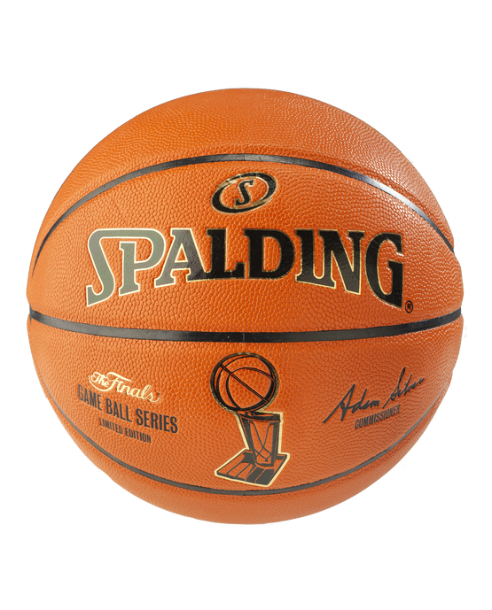

Biography of Rivalry
This rivalry has been long over due. The Lakers haven't made the plaoff in 6 years and after Chris Paul, Blake Griffin, and Deandre Jordan left, the Clippers weren't looking too hot either. But this particular offseason things changed. Lebron was back and healthy, the Lakers snagged great trades like Anthony Davis, Danny Green, and Demarcus Cousins (when healthy of course). On the flip side, Clippers also aquired great trades as well like recent Finals MVP Kawhi Leonard and NBA All-Star Paul George, and defensive hustler Patrick Beverly. This off season has reignited the Lakers Clippers rivalry. This rivalry has always been here due to the fact that they have the same home gym and fans trying to claim it as one or the others.